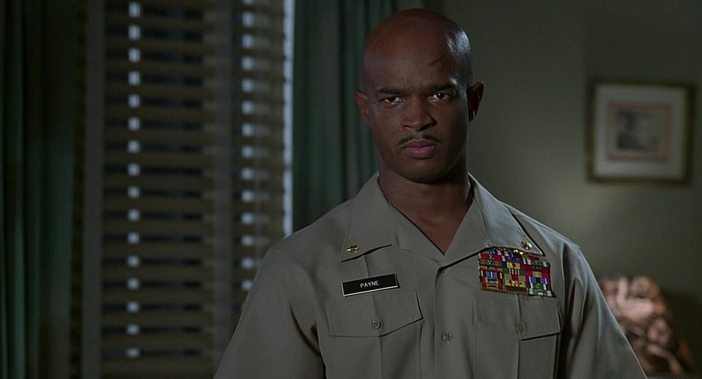
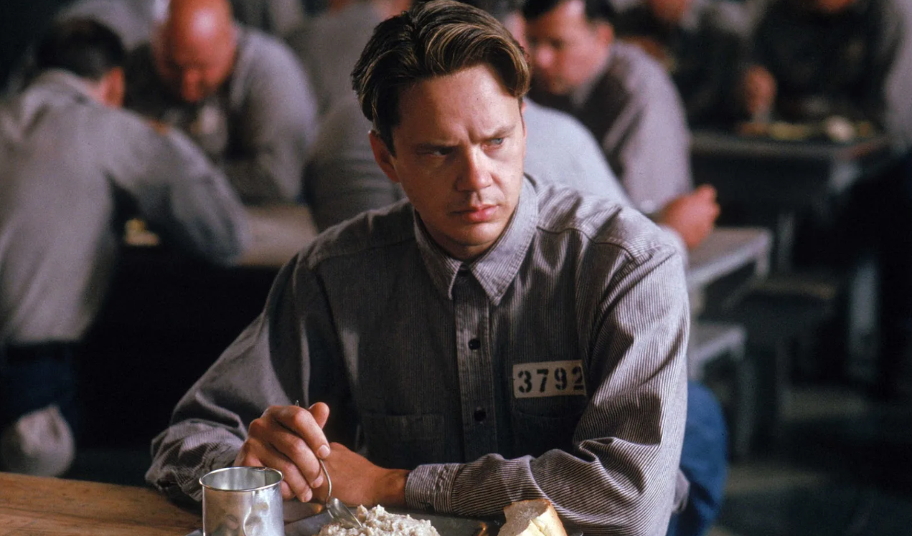

Майор Пэйн
Один из запоминающихся персонажей времен 90х годов - это главный фильма "Майор Пэйн". Майору никак не присвоят звание полковника по одной причине - он умеет только убивать, ни на что другое он просто не способен. Его отправляют в отставку. Работа в полиции ему не подходит, и наш герой умирает от скуки в одном из номеров отеля. Неожиданно он получает предложение стать инструктором по военной подготовке в военном учебном заведении. О том, как сложатся отношения «жестокосердного солдафона» с юными подопечными и одной весьма привлекательной преподавательницей рассказывает эта веселая комедия, полная забавных шуток и смешных ситуаций.
Энди Дюфрейн
Еще один запоминающийся культовый персонаж 90х годов - Энди Дюфрейн. Бухгалтер Энди Дюфрейн обвинён в убийстве собственной жены и её любовника. Оказавшись в тюрьме под названием Шоушенк, он сталкивается с жестокостью и беззаконием, царящими по обе стороны решётки. Каждый, кто попадает в эти стены, становится их рабом до конца жизни. Но Энди, обладающий живым умом и доброй душой, находит подход как к заключённым, так и к охранникам, добиваясь их особого к себе расположения.
